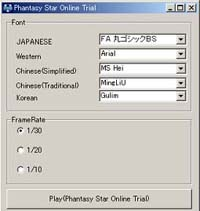

| 「ファンタシースターオンライン」(Windows版)の発売日、2001年12月20日がいよいよ目前となってまいりました。
いち早くプレイヤーの皆様が自らのマシンで「PSO」の世界をご覧頂くことができるよう、セガ/ソニックチームではご要望の高かったプレイアブルデモ版をご用意致しました。この機会に是非ご利用頂き、「ファンタシースターオンライン」製品の動作確認の目安としてお役立て下さい(※注)。
今回プレイ可能なのはオフラインプレイでの物語の序盤、謎の爆発事故を遂げた「惑星ラグオル」に降り立つハンターズ(プレイヤー)がます始めに冒険を行うことになる「森エリア」の前半の場面です。PC版ならではの美しいグラフィックで見せる森エリアの場面、臨場感たっぷりに襲い来る原生生物など、「ファンタシースターオンライン」の世界をご覧頂けるデモとなっております。
本デモをご覧頂き、皆様が製品版「ファンタシースターオンライン」の奥深いゲームの世界や、全世界規模でのコミュニティにご期待頂ければ幸いです。
※プレイアブルデモ版ではサウンドはありません。
製品版でお楽しみ下さい。 |
※注：本デモは製品版の動作保証を行うものではありません。あくまでも目安としてご利用ください。詳しくは使用許諾契約書をお読みください。
| ダウンロードの前にご覧ください。 |
| 「使用許諾契約書」 |
 |
お使いのグラフィックボードでの動作状況はこちらでご確認下さい。 |
※お使いのグラフィックボードは最新のドライバをご使用下さるようお願い致します。 |
| ※ |
本ソフトウェアはDirectX8.1を使用しております。ゲームをインストールする前に、DirectX8.1をインストールして下さい。DirectX8.1は（C）マイクロソフト社のホームページからダウンロードすることができます。
|
| ※ |
DirectX8.1をインストールしていない場合、本ソフトウェアは正常に動作しない場合がございます。 |
| ※ |
本ソフトウェアのゲーム内テキストは、日、英、仏、独、西、中（簡体字、繁体字）、韓国語に対応しております。ご使用のPCに上記言語フォントがインストールされていない場合、その言語テキストは正常に表示されません。
|
プレイアブルデモ
のダウンロード
|
| ダウンロード容量 |
１３MB |
| インストール容量 |
１７．５MB |
|
上のリンクが重い場合はこちらからもダウンロードが可能です。
セガPC>PHANTASY
STAR ONLINE のページへ
isao.netのダウンロードページへ |
| 《操作説明》 |
| こちらをご覧ください。 |
| 《ゲームの流れ》 |
| 1 |
ゲームのインストール（Setup.exeをダブルクリックしてください）
↓ |
| 2 |
ショートカットメニューから、[Phantasy Star Online
Trial]を選択
↓ |
| 3 |
各オプション項目を選択後、[Play
(Phantasy Star Online)]
↓ |
| 4 |
タイトル画面で[NEWGAME]を選択
↓ |
| 5 |
設定されたキャラクターで森１ステージのオフラインゲーム開始
（ゲーム中に行える機能は、体験版用に限定されております）
↓ |
| 6 |
メインメニューから[ゲーム終了]を選択すると、タイトルに戻ります。
↓ |
| 7 |
タイトル画面で[EXIT]を選択すると、ウィンドウズに戻ります。 |
|
| 《タイトル前オプション項目説明》 |
|  |
|
Font
|
ゲーム内に表示されるテキストを、システムにインストールされているフォントの中から選択することができます。
※ご使用のPCにフォントがインストールされていない場合、その言語のフォントを設定することはできません。 |
|
Frame
Rate
|
ゲーム中の描画速度（１秒間に描画されるフレーム数）を変更することが可能です。ご使用のPCのスペックに応じて、フレームレートを切り替えてください。 |
|
|
|